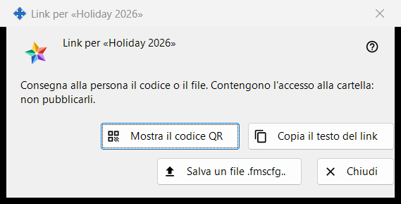
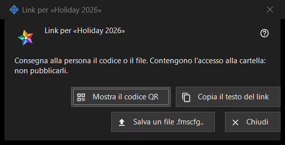

Link per una cartella
Scopo
Consegna una cartella pubblicata a una persona che non ha un account sul server di scambio: come QR code, come testo del link e come file .fmscfg. Si apre dopo «Crea un link..» o «Nuovo link..» nel gruppo «Le mie cartelle condivise nell'account di scambio» e con «Mostra QR / Codice..» nella finestra «Dai accesso esterno..» di una cartella. Nel programma attuale entrambi i comandi sono disattivati, perché l'accesso per le persone esterne all'account non è offerto; questa pagina descrive che cosa mostra la finestra quando esiste un link.


In questo ordine
- Seleziona una cartella pubblicata e premi «Crea un link..» (oppure «Nuovo link..» per sostituire un vecchio link).
- Leggi l'avviso in alto.
- Consegna il link con «Mostra il QR code», «Copia il testo del link» o «Salva un file .fmscfg..».
- Premi «Chiudi».
Gli elementi
Quando la finestra è disponibile
La finestra esiste solo per un link appena creato o già esistente. Finché l'accesso per le persone esterne all'account non è offerto, «Crea un link..» e «Nuovo link..» sono disattivati, un avviso sotto di essi ne indica il motivo e la finestra non si apre; anche «Mostra QR / Codice..» è disattivato. «Rimuovi il link» resta disponibile.
L'avviso in alto
«Consegna alla persona il codice o il file. Contengono l'accesso alla cartella: non pubblicarli.» Chi possiede il QR code, il testo del link o il file può aprire quella cartella. Il testo del link non viene mai mostrato sullo schermo.
Mostra il QR code
Apre l'immagine del QR code in una finestra di ingrandimento. Il pulsante c'è solo se è stato possibile creare un QR code; a un testo del link troppo grande per un QR code si risponde con «Il codice è troppo grande per un QR code - usa il file.».
Copia il testo del link
Mette il testo del link (inizia con FMSSFTP2:) negli appunti attraverso un percorso protetto che lo tiene fuori dalla cronologia degli appunti di Windows e dagli appunti nel cloud, e risponde «Testo del link copiato.». Presente solo se il link ha un testo.
Salva un file .fmscfg..
Salva un file di impostazioni per questa singola cartella, leggibile solo dal suo proprietario. La finestra riporta «File salvato:» con il percorso, oppure «Impossibile salvare il file.». Presente solo se è stato possibile creare il file.
Nuovo link e Rimuovi il link
Entrambi appartengono al gruppo, non a questa finestra, ed entrambi chiedono prima conferma, con «No» come risposta predefinita: «Nuovo link..» avverte che tutti i QR code e i file precedenti smetteranno di funzionare, «Rimuovi il link» che smetteranno di funzionare tutti i QR code e i file distribuiti con esso.
Chiudi
Chiude la finestra ed elimina da essa il testo del link, il contenuto del file e l'immagine del QR code.
Impostazioni del gestore · Impostazioni condivisione SFTP · Impostazioni server di scambio